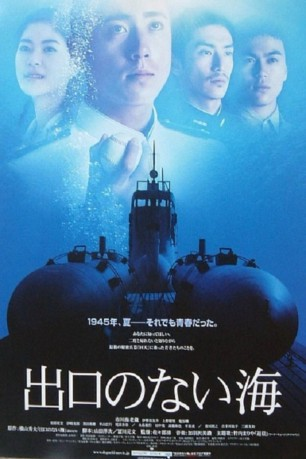
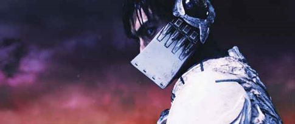

#7451 Kaiten - Human Torpedo War
 
 IMDB-Wertung: 6.5 / 10
IMDB-Wertung: 6.5 / 10  Metascore: 0
Metascore: 0 
In der Mitte des Jahres 1945 macht sich ein U-Boot der japanischen Flotte auf eine geheime Mission in Pazifik auf. An Bord befinden sich vier furchtlose, junge Männer: Hig-School-Baseballspieler Koji Namiki (Ebizô Ichikawa), dessen Klassenkamerad und Marathonläfer Katsuya Kita (Yusuke Iseya), der fröhliche Yasukichi Sakuma (Shuji Kashiwabara) und Hiroyuki Okita (Mitsunori Isaki), der jüngste in der Gruppe. Scheinbar furchtlos haben sie sich auf eine Mission, die Niederlage Japans im letzten Moment noch abzuwenden. Dass sie mit ihrem Leben bezahlen werden, ist ihnen bewusst. Denn sie sollen die bemannten Kaiten Torpedos steuern, mit denen sie feindliche Schiffe rammen und versenken. Ein Notausstieg ist nicht vorhanden und die Sprengkraft garantiert einen sicheren Tod. Es ist ein Kamikazeauftrag ohne Rückkehr, der die vier jungen Menschen bis an ihre Grenzen treibt. Angespannt warten die Jungs das Signal zum Angriff.
Jahr: 2006
Dauer: 121 Minuten
FSK:
Land: Japan Studio: Musketier MediaTonspuren:
Untertitel: Deutsch,
Auflösung: 1080p (1920x1040) Größe: 7383 MB
Genre: Drama, Krieg
Regisseur: Kiyoshi Sasabe
Drehbuch: Hideo Yokoyama
Soundtrack:
Darsteller:
- Ebizô Ichikawa als Koji Namiki
-  Yûsuke Iseya als Katsuya Kita
- Juri Ueno als Minako Narumi
- Shun Shioya als Nobuo Ito
 Teruyuki Kagawa als Kashima
Teruyuki Kagawa als Kashima- Yûko Kotegawa als Mitsue Namiki
- Tomokazu Miura als Toshiaki Namiki
- Hiroyuki Hirayama als Gouhara
- Kyôta Inoue als
- Mitsunori Isaki als Hiroyuki Okita
- Shûji Kashiwabara als Yasukichi Sakuma
- Yûki Kuroda als Satoshi Obata
- Toshiyuki Nagashima als Baba
- Tsubasa Nakamura als Chihara
- Anna Odaka als Yukiyo Namiki
- Makoto Sakamoto als Kikuchi
- Yasuhito Shimao als Shibada
- Kazuya Takahashi als Kenzaki
- Minoru Tanaka als Toda
Datei: X:\HD-Eastern-Modern(A-M)\Kaiten - Human Torpedo War (2006, FSK, 1920x1040).mkv seit 10.11.2017
Festplatte: HD Eastern+Western
 Es gibt insgesamt 104 Filme in der Gruppe 'HD-Eastern-Modern(A-M)'
Es gibt insgesamt 104 Filme in der Gruppe 'HD-Eastern-Modern(A-M)'